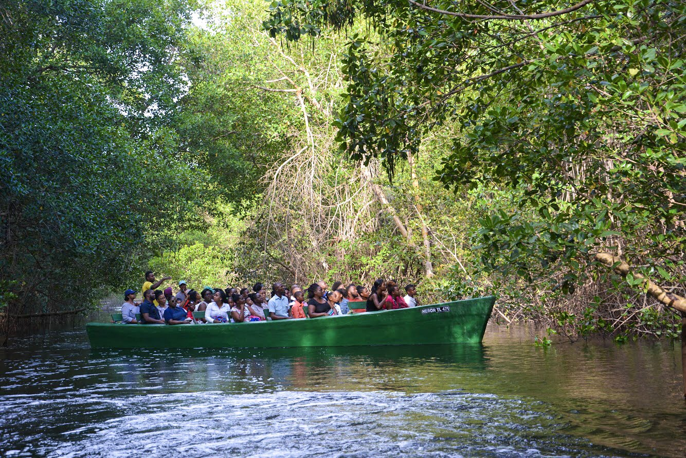
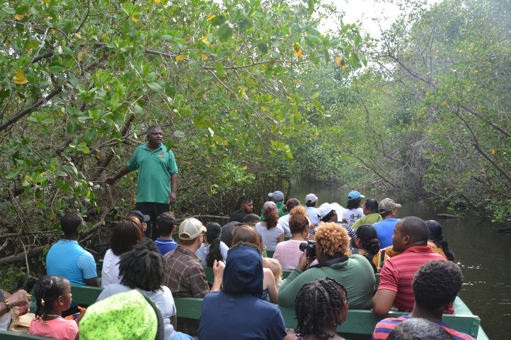
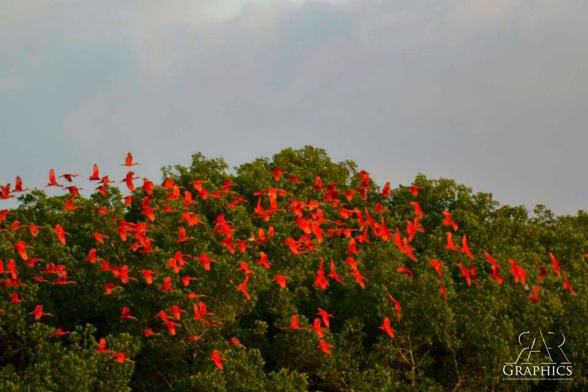

The Swamp is known for many different species such as:
- Caimans
- Swamp Boas
- Scarlet Ibis
- Crab of different types
- Fishes
Educational Usage / Eco-tourism
The Caroni Swamp is visited by thousands of eco-tourists per year. This is important to local communities. The Caroni Swamp is not only an attraction for tourism but it also provides goods and services to local communities and to the Island of Trinidad. For example the swamp provides coastal storm surge protection, carbon sequestration (the uptake and storage of carbon by trees and plants that absorb carbon dioxide), and sediment filtration for near-shore ecosystems. In 2011 a project was started in order to evaluate the TEV, total economic value, of the Caroni Swamp. The study looks at the way the Caroni Swamp provides for Trinidad and Tobago and to the wider Caribbean. The study will also predict the potential damage that climate change can have on wetlands and ecosystems such as the Caroni Swamp. This study could provide strategies for preventing damage to other wetlands as well.
Pictures of the Caroni Swamp
  Please see table below for the tour schedules
| Day | Time | |
|---|---|---|
| AM | PM | |
| Monday | 8:00 am | 12:00 pm |
| Tuesday | 8:30 am | 12:45 pm |
| Wednesday | 8:50 am | 1:00 pm |
| Thursday | 7:30 am | 12:35 pm |
| Friday | 9:00 am | 12:50 pm |
| Saturday | 7:00 am | 12:00 pm |
| 10:00 am | 2:00 pm | |